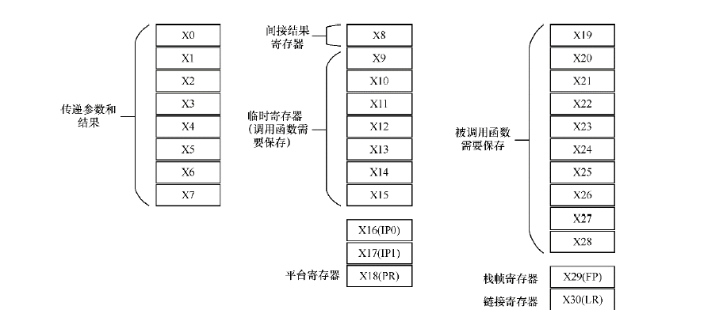
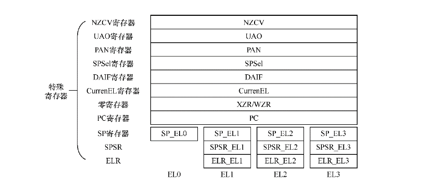
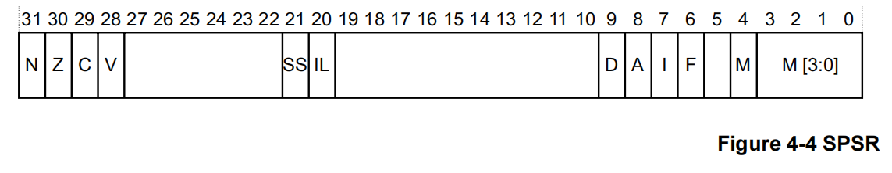
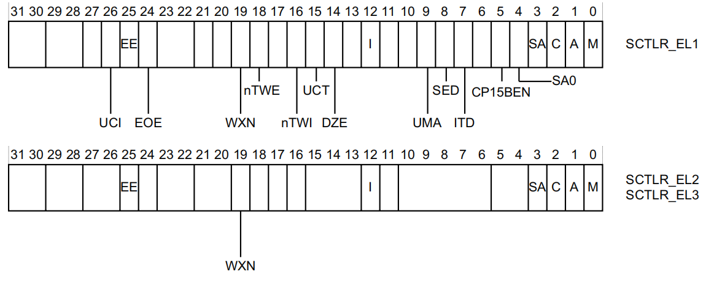

12.1. arm64寄存器
12.1.1. 通用寄存器
arm64提供了32个在任何时间任何特权级下都可以访问的64位通用寄存器， 他们通常被称为寄存器X0~X30

寄存器 |
描述 |
X30(LR) |
链接寄存器(函数返回地址) |
X29(FP寄存器) |
栈帧指针寄存器 |
X19~X28 |
被调用函数保存的寄存器，在子函数使用时需要保存到栈中 |
X18 |
平台寄存器 |
X17 |
临时寄存器或者第二个IPC(Intra-Procedure-Call)临时寄存器 |
X16 |
临时寄存器或者第一个IPC临时寄存器 |
X9~X15 |
临时寄存器 |
X8 |
间接结果位置寄存器，用于保存子程序的返回地址 |
X0~X7 |
用于传递子程序参数和结果，若参数个数大于8，就采用栈来传递。X0寄存器用于返回结果 |
备注
每个异常级别都有自己的栈指针，SP_EL0, SP_EL1, SP_EL2, SP_EL3
12.1.2. 特殊寄存器

PC程序计数器: 指向当前运行指令的下一条指令的地址，用于控制程序中指令的运行顺序，但编程人员不能通过指令来直接访问它
SP寄存器: 每个异常等级下都有一个专门的SP寄存器SP_ELn
异常链接寄存器(ELR): 保存异常返回地址
程序状态保存寄存器(SPSR): 当异常发生时，CPSR中的处理器状态佳能保存在相关的程序状态保存寄存器(SPSR)中， SPSR保存着异常发生之前的PSTATE的值， 用于异常返回时恢复PSTATE的值

备注
N: 负数标志位，如果为负数则N=1
Z: 零标志位，如果结果为零，则Z=1
C: 进位标志位
V: 溢出标志位
SS: 软件步进标志位，表示一个异常发生时，软件步进是否开启
IL: 非法执行状态位
D: 程序状态调试掩码，在异常发生时的异常级别下，来自监视点、断点和软件单步调试事件中的调试异常是否被屏蔽
A: SError(系统错误)掩码位
I: IRQ掩码位
F: FIQ掩码位
M: 异常发生时的执行状态，0表示aarch64
M[3:0]: 异常发生时的异常级别
处理器状态寄存器(PSTATE): 保存处理器的状态信息，包括条件标志、异常级别、IRQ使能状态等
| 31 | 30 | 29 | 28 | 27 | 26 | 25 | 24 | 23-22 | 21-20 | 19-16 | 15-10 | 9-8 | 7-6 | 5-4 | 3-0 |
|----------|----|-----|------|-------|----|----|----|-------|-------|-------|----------|-----|------|------|-----|
| Reserved |PAN | DIT | SSBS | IL | A | I | F | M | T | E | Reserved | S | M | V | C |
备注
PAN: 该位控制是否允许在特权界别下访问某些内存区域，PAN=1时，禁止在特权模式下访问用户空间内存区域
DIT: 禁用中断控制位
SSBS: 控制是否禁用规范存储绕过
IL: 标志指令的长度，arm64中可以使用32位及64位长度指令
A: 是否能够响应一步中断
I: 是否禁用IRQ
F: 是否禁用FIQ
M: 指示当前处理器异常级别
T: 指示是否在thumb模式下执行指令，arm处理器支持arm和thumb两种指令集架构
E: 存储当前处理器状态下的异常标志
S: 用于控制堆栈指针对齐检查
M: 指示当前处理器的工作模式
V: 指示是否启用了向量处理器
C: 表示条件标志，包括零标志、负标志
系统控制寄存器(SCTLR): 用来控制标准内存、配置系统能力、提供处理器核状态信息的寄存器

备注
UCI: 设置此位后，在arm64中DC CVAU, DC CIVAC, DC CVAC和IC IVAU指令启用EL0访问
EE： 异常字节序，0小端， 1大端
EOE: EL0显示数据访问的字节序
WXN: 写权限不可执行，0可写区域不设置不可执行权限，1可写区域强制为不可执行
nTWE: 不陷入WFE, 1表示WFE作为普通指令执行
nTWI: 不陷入WFI, 1表示WFI作为普通指令执行
UCT: 开启arm64的EL0访问CTR_EL0寄存器
DNE: EL0下访问DC AVA指令，0禁止执行
I: 开启指令缓存
UMA: 用户屏蔽访问，控制从EL0的中断屏蔽访问
SED: 禁止SETEND, 在EL0使用aarch32精致SETEND指令， 0使能，1禁止
ITD: 禁止IT指令
CP15BEN: CP15 barrier使能
SA0: EL0栈对齐检查使能位
C: 数据cache使能
A: 对齐检查使能位
M: 使能MMU